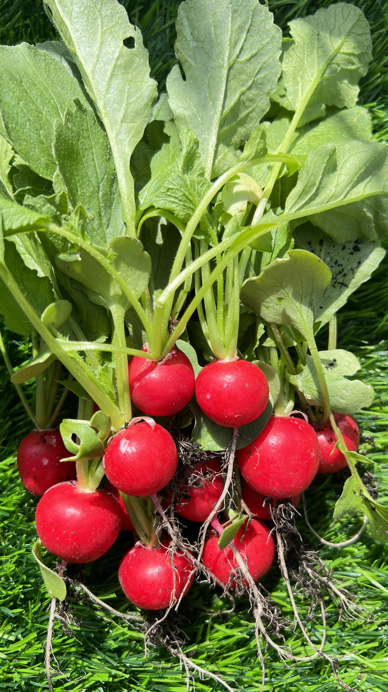
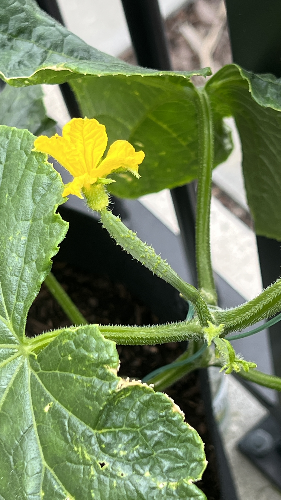
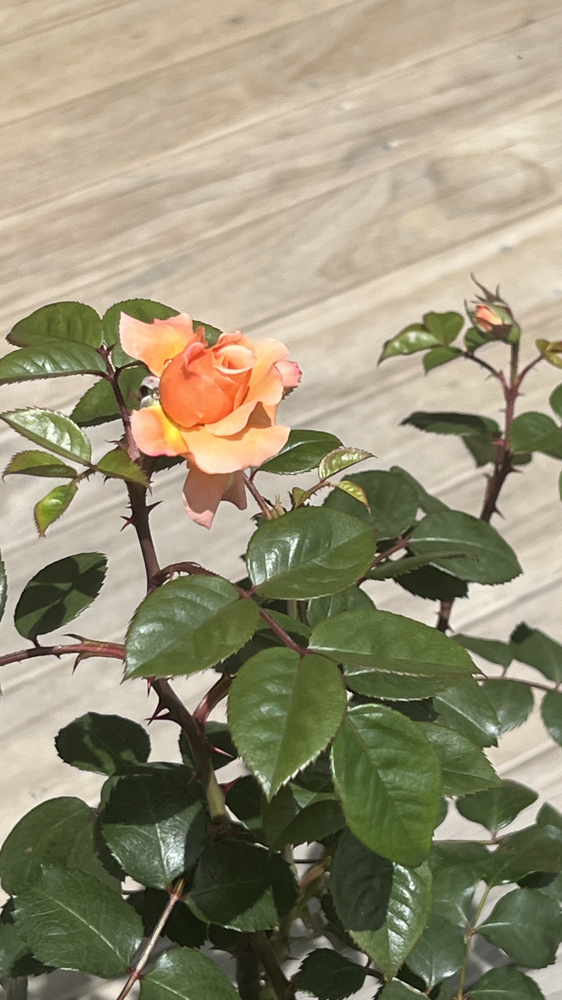
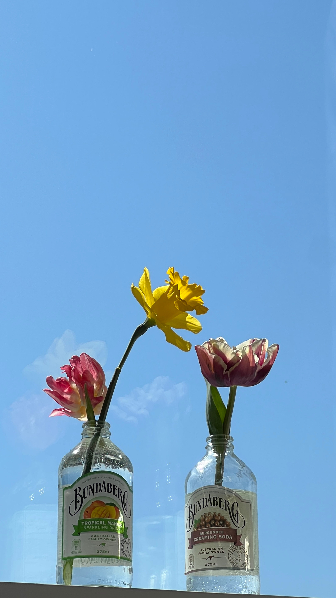
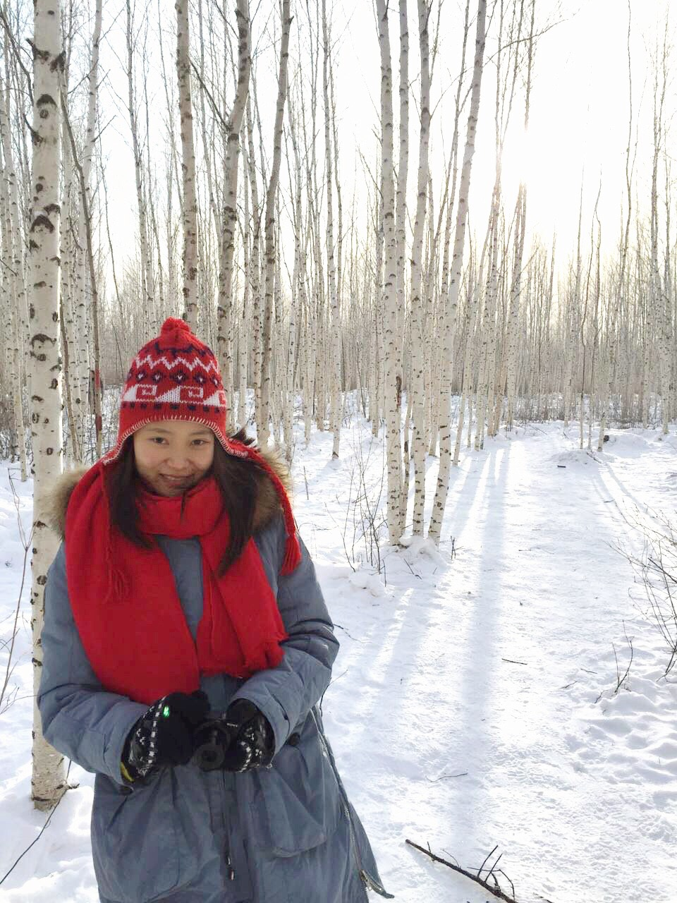
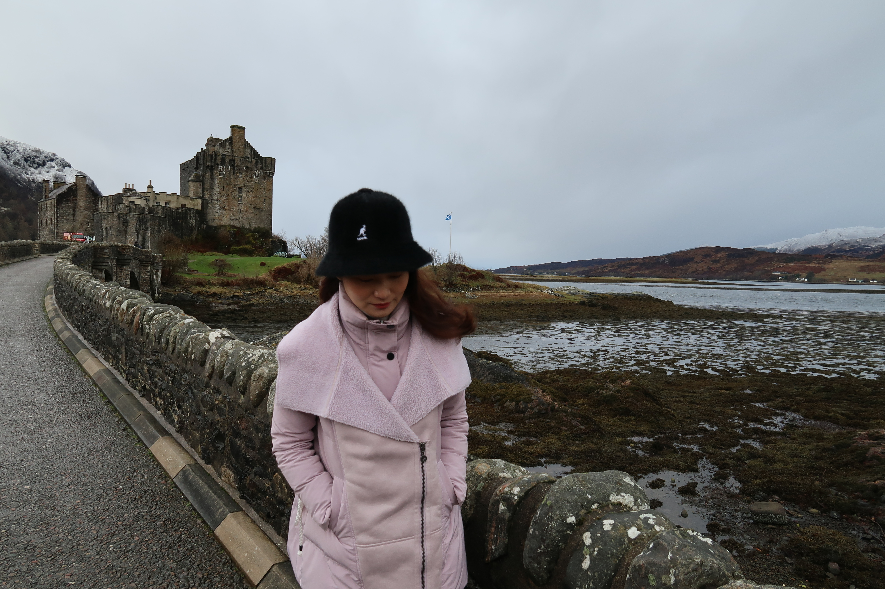
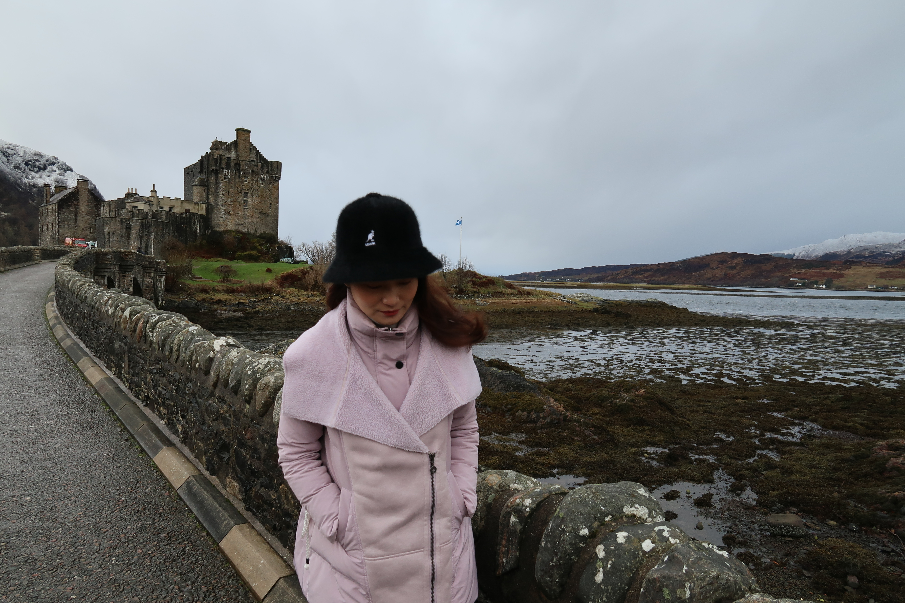

My Interests
In my yard, I've planted a variety of plants. Watching them grow every day brings me immense joy.
   I have a profound passion for traveling. I've visited many places and hope to explore even more destinations in the future.
 

Playing the piano is my best friend when it comes to expressing my emotions.